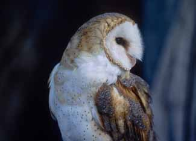

I discovered the owls by accident one day, when I climbed into the hayloft of my grandfather's old barn to play on the bales. As soon as I'd pulled my 10-year-old body up the ladder, there came a chaos of rustling and flapping in the darkness, and an eerie, raspy hissing. I was back down the ladder in a heartbeat. But a few minutes later, driven by curiosity, I carefully climbed back up, until my eyes were just above the loft floor. There they were, about 10 yards away, side by side on a cluster of hay bales snug up against the wall: a pair of barn owls - or, more accurately, a pair of ghostly pale barn owl faces swaying and bobbing in the dark like small, tethered balloons. Their speckled white-and-russet bodies, barely visible in the dim light, sat atop long, bright-white legs. I could hardly believe my eyes. Chickens with monkey faces, I remember thinking.
Nearly every day that summer, I'd tiptoe into the barn and climb a ladder to the loft's opposite side, where I could sit atop a stack of bales and study the owls without disturbing them. At dusk, I'd watch from outside as the owls would leave one at a time through an opening near the roof and swoop silently to the pasture below, flying low and slow along a hedgerow before vanishing into the gathering darkness.
I confess I've had a fascination with barn owls ever since. As a child, I envisioned them as mysterious masters of the nightspirits on wings. They seemed magical to me. Of course, now I'm grown up and I know the facts about barn owls. And guess what? It turns out I was right all along.
The "barn" owl name conjures visions of Americana, but this owl actually is a distinctly international species: The barn owl, Tyto alba, glides the night skies over Australian grasslands, Indian deltas, African savannahs and South American rain forests. According to many ornithologists it is the most widespread land bird on the planet, ;found on every continent except Antarctica. In North America, barn owls are found coast-to-coast from lower Canada southward, except for northern New England and parts of the upper Midwest and Great Plains.
Barn owls belong to a family of about 15 species, most of them Asian, known as Tytonidae. Biologists distinguish between barn owls and "typical" owls, such as great horned and barred owls, which are members of the Strigiformes family. The main difference is as plain as the faces on their heads: barn owls have monkeylike, heart-shaped faces, and typical owls don't. Barn owls also have distinctly long legs, each with four toes tipped with razor-sharp talons - perfect for snatching a meal from tall grass.
But barn owls share many of the traits that make all owls amazing creatures. Like humans, they have forward-facing eyes that give them three-dimensional, stereoscopic vision. But unlike humans, they can't move their eyes in their sockets. That's why owls always seem to be staring straight at you, and why they tend to nod and bob their heads - the slightly varying points of view give them better depth perception. And to look around, owls literally look around: Thanks to a ball-and-cup neck bone structure, an owl can turn its head 270 degrees - three-fourths of a full circle or about four times farther than we can.
Owls are also of a feather when it comes to ... well, their feathers. Most birds' flight feathers are stiff-edged, but an owl's are soft and fringed, allowing noiseless, deadly flight. A vole hears nothing before talons sink into it. Among the slowest-flying of all birds, the barn owl is particularly stealthy. Cruising silently just a few feet above a field at night, it flaps its wings once stiffly, then glides ... then flaps ... then glides.
Of course, it's one thing to fly through the night, and another to find a meal. Owls have notoriously good night vision, thanks to large eyes packed with dim-light-gathering cells. Owls unquestionably use their extraordinary vision to locate prey. But scientists have found that for most owls, hearing is an even keener, more crucial sense for finding food at night. Certainly that's the case with the barn owl. Its eyes are comparatively small for a night-hunting bird, but its hearing is unsurpassed. No other owl species - in fact, no other bird of any kind tested so far - has better hearing than T. alba.
In the 1950s, researchers at Cornell University showed that a barn owl can find and snatch running mice in total darkness, using only its hearing. Not only was the bird able to track the direction in which a mouse was moving, but its hearing was so precise that in the split-second before it struck, it would align its talons with the long axis of the victim's body, increasing the odds of a kill.
In the half-century since the Cornell study, scientists have worked to gain a better understanding of the barn owl's astonishing aural acuity. One element is the bird's facial disc, also found in other owls but best developed in the super-eared barn owl. The disc lies beneath the bird's soft outer facial feathers and consists of layers of short. stiff feathers packed together in a circular pattern, forming a concave, parabolic dish. The raised outer edge of the dish is heart-shaped, giving the bird its distinctive "monkey face." The right and left halves of the disc work like hands cupped behind ears. Sound waves caught in the dish are directed into two long curving grooves, one on each side of the disc, that lead to the owl's ear openings. The grooves collect and concentrate faint sounds - the pitter-patter of eensy mouse feet, for instance.
That explains how a barn owl hears a mouse, but how does it pinpoint its victim? Picture the cross hairs in a telescopic sight. To zero in on a target, you line it rip both horizontally and vertically. A barn owl does the same thing, but its "cross hairs" are its ears. Minute differences in the timing and intensity of sound reaching each ear give the barn owl a fix on its prey.
When a barn owl hears a sound, it turns its head toward the source until the sound strikes both ears simultaneously. That gives the barn owl the sound's horizontal position. Determining the vertical position is a hit more complicated, but vital-without it, that dive for yummy rodent flesh could be a few inches too high (a clean miss) or too low (crash). The secret is in the lopsided arrangement of the bird's ear openings. The right ear opening is lower on the face and tilts slightly upward. The left ear is higher than the right and tilts down. As a result, sounds from above are louder in the owl's right ear. and those from below are louder in the left. The differences in volume tell a barn owl whether a sound is coming from above or below and reveal its exact elevation. When a sound is equally loud in both ears, the source is at eye level.
Perhaps even more remarkable is the barn owl's auditory cartography. As it locates sounds and orients their locations in the landscape with its eyes. the barn owl builds and stores an auditory snap of its surroundings. Each sound it locates. each unique combination of ear-to-ear differences in timing and intensity, is assigned to specific brain cells that in turn link that one-of-a-kind combination to a specific location in space. The next time those particular cells in that particular part As a child, envisioned them as mysterious masters of the night spirits on wings. of its brain fire in response to a sound, the barn owl knows within a degree or so where the sound is coming from, even if the sound stops before the bird turns its head toward it. Thus, only a momentary rustle from a restless rodent may spell its doom.
The barn owl's impressive hunting efficiency is matched only by its appetite. Barn owls eat small birds, insects, and even bats and lizards. But bite-size rodents are by far their favorite fare. Typically, an adult swallows down (whole) about three to six mice, moles or voles a night. In just one nesting season, two adults and six nestlings will consume more than 1,000 rodents.
It's easy to see, then, why a family of barn owls is about as good as it gets when it comes to natural rodent control. Unfortunately, the owls' habitat - open, grassy pasture and hedgerows with healthy rodent populations - faces the devouring appetite of a different sort. The conversion of pastures to row crops, and the loss of open land to development, is rapidly reducing barn owls' foraging territory.
Even the owls' namesake nesting site the venerable barn with a protected loft is slowly disappearing. Although barn owls are adaptable and will nest in tree cavities, caves and other natural shelters, they don't accumulate fat for the winter and are poorly equipped to survive cold weather. Barns are critical, then, especially in northern climates. In many places barn owls continue to thrive. But in others, sadly, they've become symbols of a rural landscape that's vanishing quietly and surely - like a "ghost owl" in the night.
|
 ISTOCKPHOTO/JOHN PITCHER Over a three-month nesting period, one barn owl family will consume more than 1,000 rodents. So don't tear down old buildings where barn owls might roost. Give barn owls shelter and they will help control rodent populations in your farm or garden. |
|
|